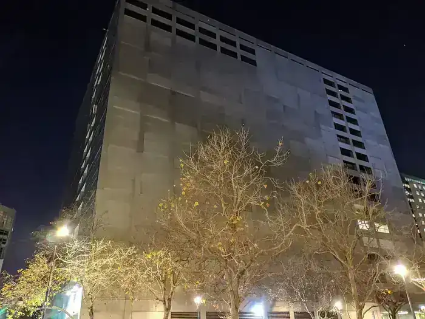
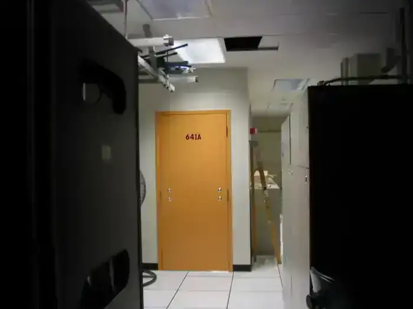

The room
Room 641A is a room in an AT&T switching facility at 611 Folsom Street, San Francisco, fitted out from 2003 with equipment that split internet traffic and diverted a copy to a National Security Agency programme. It was described in a 2006 declaration by Mark Klein, a retired AT&T technician.
Maps, diagrams and images




The record
Klein's evidence, published by Wired and used in litigation, described the hardware and the installation. The US government invoked state secrets privilege to have the case dismissed, and the programme was later confirmed in outline by the 2013 Snowden disclosures.
The room is one of the few pieces of physical infrastructure of a mass surveillance programme to be documented with a site address.
Documented: the room, the equipment and the whistleblower's declaration.
Documented: the litigation and the state secrets dismissal.
Documented: the programme, confirmed in outline later.
Contested: the scope of the collection.
The label: documented.
Why it is in the archive
Because it is the case where a conspiracy theory about the internet was replaced by a documented room, with an address.
Open resources on this topic
- BookRoom 641A - NSA Spying Diagram 3D — Various Authors (Internet Archive, free to read)
- PapersOpen-access articles: DOAJ · PubMed Central · Internet Archive Scholar
- BooksPublic-domain and borrowable copies: Open Library · Project Gutenberg · Google Books
Cite this page
Momin, S. (2026). Room 641A. The Larger World Archive. https://drsamonline.github.io/LARGE_GLOBE/room-641a.htmlMomin, Sohil. “Room 641A.” The Larger World Archive, 2026, https://drsamonline.github.io/LARGE_GLOBE/room-641a.html.Momin, Sohil. “Room 641A.” The Larger World Archive, 2026. https://drsamonline.github.io/LARGE_GLOBE/room-641a.html.@misc{room2026room,
author = {Momin, Sohil},
title = {Room 641A},
year = {2026},
howpublished = {The Larger World Archive},
url = {https://drsamonline.github.io/LARGE_GLOBE/room-641a.html},
note = {Last reviewed 20 November 2026}
}Last reviewed 20 November 2026 · Corrections policy · this page is not peer reviewed
Sources for this page
- Wikipedia, “Room 641A” — the room and the disclosuresen.wikipedia.org
- Wikipedia, “Mark Klein” — the whistlebloweren.wikipedia.org
- Wikipedia, “NSA warrantless surveillance” — the programmeen.wikipedia.org
- Wikipedia, “State secrets privilege” — the legal mechanismen.wikipedia.org